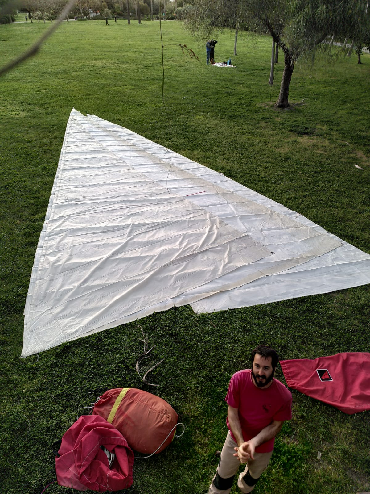
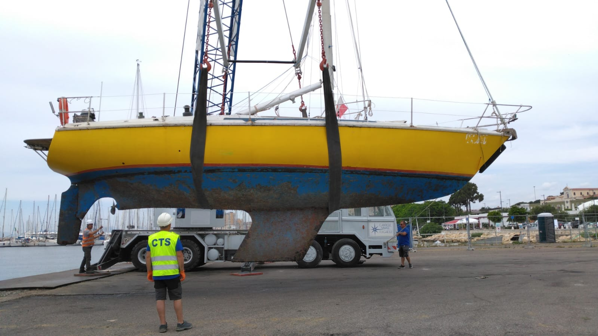
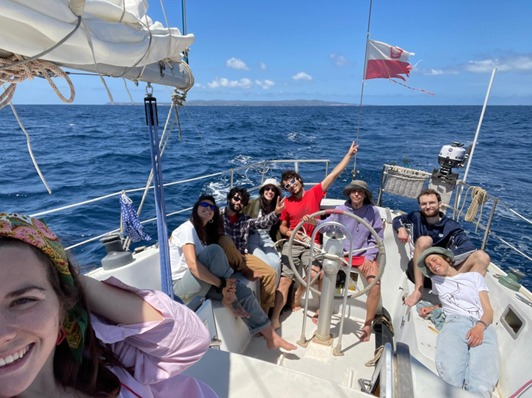

Torna in barca
Torna in barca
Un po' di foto di Soleil Rouge.

Aprile 2026 - Misuriamo le vele al parco in attesa di altre aperure straordinarie del cantiere, per portarci avanti nel caso compaiano opportunità di comprare vele di seconda mano a prezzi stracciati..jpeg) Luglio 2025 - L'avanzato sistema di protezione dalle polveri durante l'apertura delle bolle di osmosi.
Luglio 2025 - L'avanzato sistema di protezione dalle polveri durante l'apertura delle bolle di osmosi.

Maggio 2025 - Soleil Rouge viene messa in secca a Su Siccu.
Maggio 2025 - Trasferimento entusiasta di Soleil Rouge, coccolata da una ciurma allegra e festante.